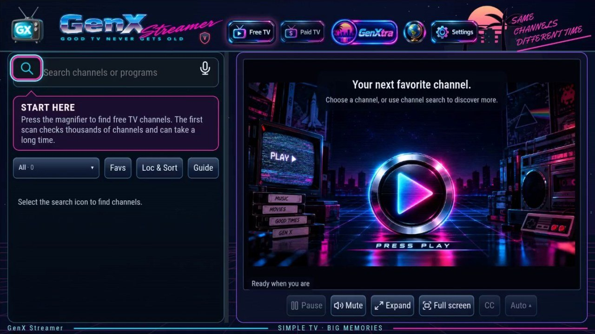
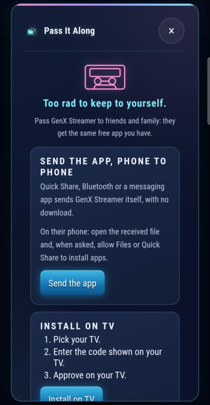
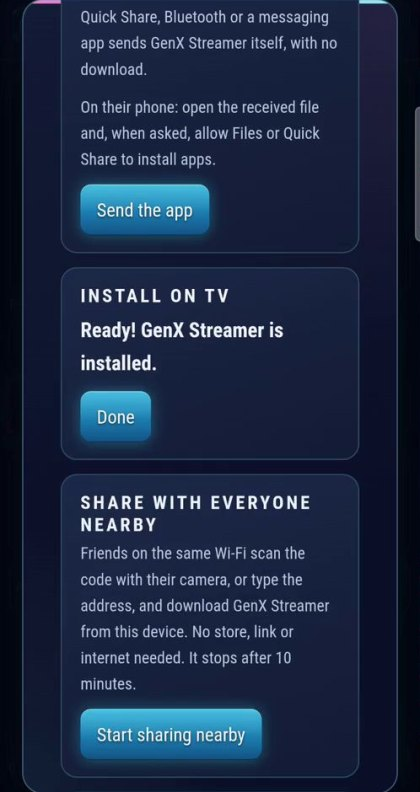

Good TV never gets old.
GenX Streamer: free live TV app for Windows and Android TV
A free app for Windows and Android TVs, phones and handhelds: free live TV channels, a program guide and a public-domain film library. Free and open source, with no GenX account or tracking.

What you get
Free TV
Finds public live channels, checks that they actually play, and keeps the ones that do. Favourites, search and voice search.
GenXtra
A library of public-domain films and classic TV, with downloads.
Program guide
What's on now and next, instant replay and captions, with a remote-friendly design for TVs.
Paid TV, your way
Bring your own provider account; it stays in your device's protected storage.
Cast to a screen
Send what you're watching to a Chromecast or DLNA TV.
Old devices welcome
Runs on 32- and 64-bit Android TVs and handhelds, with its own decoders for formats some devices can't play.
Pass it along: no app store needed
Too rad to keep to yourself. GenX Streamer travels friend to friend:
- Send it phone to phone with Quick Share or Bluetooth.
- Share it with everyone nearby: friends scan a QR code or type a short address, with no internet needed.
- Install it on a Google TV from your phone: pick the TV, enter the code it shows, approve on the TV. GenX does the rest.


Get it
Android
TVs, phones, tablets and handhelds with Android 7.0 or newer (ARM, 32- and 64-bit).
Windows
Windows 10 and 11 (64-bit), as an installer-free exe or a portable ZIP.
Check your copy
Every file has a published checksum. How to verify a download.
About the GenX Streamer app
What is GenX Streamer?
GenX Streamer is a free, open-source TV player by Doug Trier. Watch public live channels, browse a program guide and explore GenXtra's public-domain films and classic TV. You can also bring your own playlists or provider account.
Which devices does it support?
Windows 10 and 11 (64-bit), and Android 7.0 or newer on ARM devices, including Android TV, Google TV, phones, tablets and handhelds. There is currently no iPhone, iPad or Mac version.
Does it include a paid TV subscription?
No. The app is free; paid services require your own provider account. Channel availability depends on the source and your location. A channel or guide listing does not guarantee that a stream is available or will play.
How do I install it?
Download the official Windows ZIP or Android APK, then follow the installation and setup guide. You can also install on a Google TV or Android TV from an Android phone using Pass It Along.